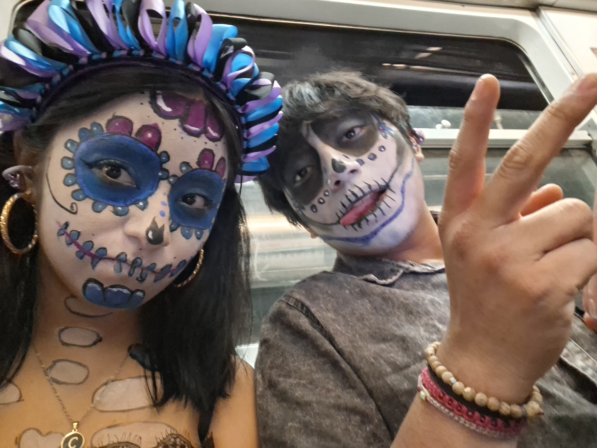
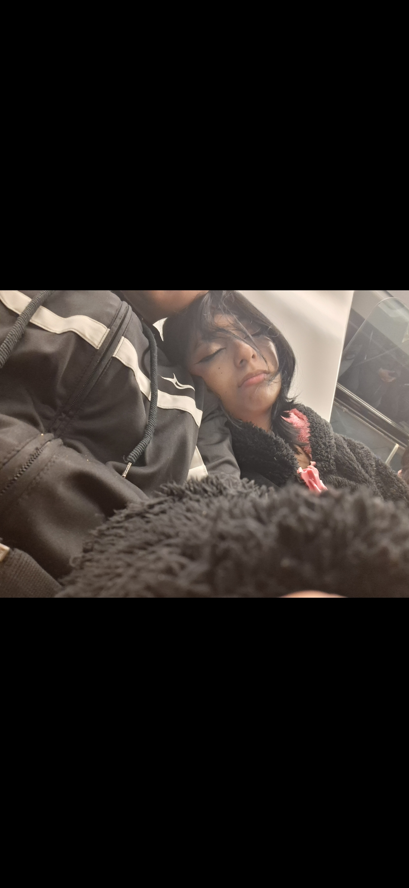
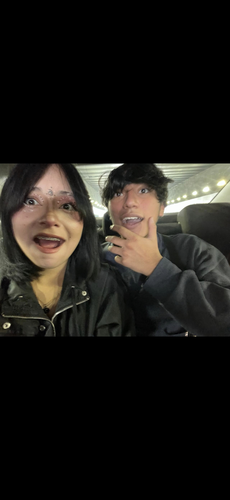
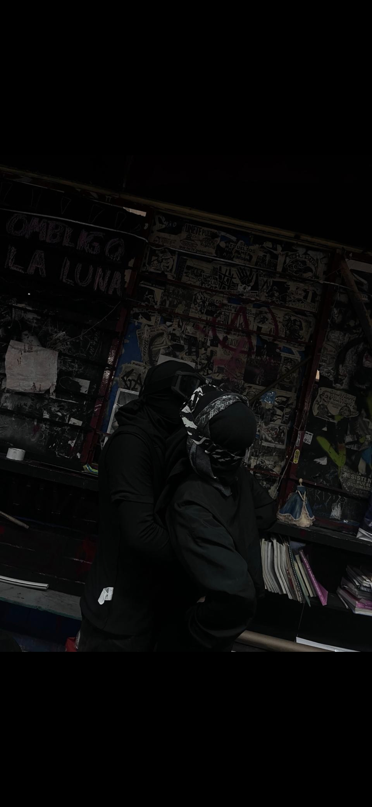
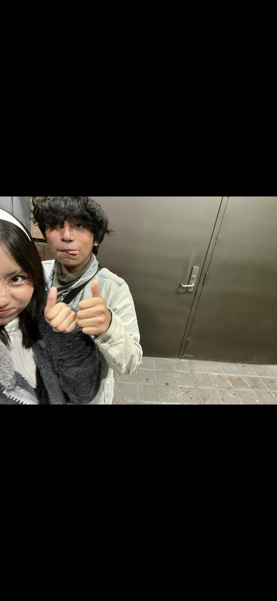
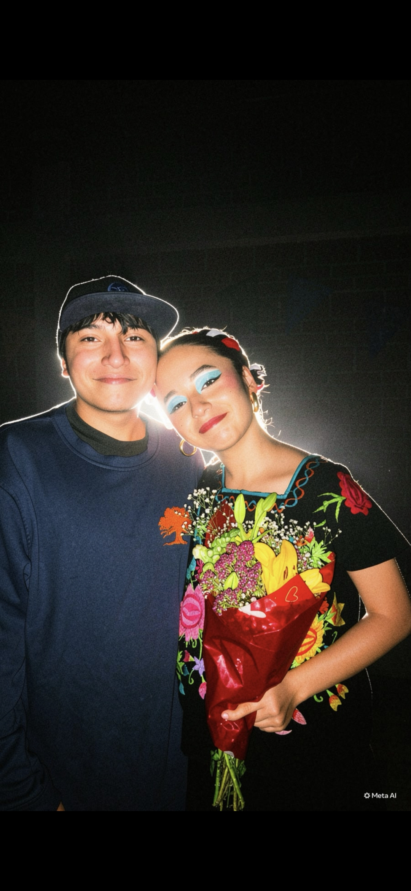

Con todo mi amor, siempre. cocho ♡
Nuestro tiempo ♡
Y lo que falta para que te liberes de mi va a estar cañon eh esto no es nadita.
—
días
—
horas
—
minutos
—
segundos
Algo que quiero decirte
Hay cosas que quiero que puedas volver a leer cada vez que necesites recordar cuánto te quiero.
toca el sobre para abrir tu carta
Pedacitos de yo y tu mi moana verga

PRUEBA DE IMAGEN








PRUEBA DE IMAGEN





“Qué suerte coincidir contigo en esta vida me haces tan feliz MTZ”
Cosas que quiero recordar
🌸Un momento feliz
todos los diais a tu lado son los mas felices para mi pero uno de los que mas recuerdo con cariño es cuando me hiciste videollamda en el concierto de silvana estrada o cuando dibujaste dn la arena.
🫶Algo que amo de ti
La forma en que haces especiales las cosas pequeñas, sin siquiera darte cuenta y la gran persona que eres no solo amable si no que inteligente graciosa y talentosa.
🌙Lo que nos espera
Más historias, más abrazos, más lugares por conocer y muchos recuerdos por crear y no olvidsr una niña con tus ojitos y casarnos en oaxaca.
🌸
Un momento feliz
todos los diais a tu lado son los mas felices para mi pero uno de los que mas recuerdo con cariño es cuando me hiciste videollamda en el concierto de silvana estrada o cuando dibujaste dn la arena.
🫶
Algo que amo de ti
La forma en que haces especiales las cosas pequeñas, sin siquiera darte cuenta y la gran persona que eres no solo amable si no que inteligente graciosa y talentosa.
🌙
Lo que nos espera
Más historias, más abrazos, más lugares por conocer y muchos recuerdos por crear y no olvidsr una niña con tus ojitos y casarnos en oaxaca.
Nuestra canción
Una canción para acompañar este pequeño rincón. Toca el botón para escucharla.